AI Academy · Level 1 · Grade 6 · Week 32 · Student lesson
Build a Paper Prototype
Learn to understand, design, build, test and explain AI systems responsibly.
Project: Helpful Classroom Sorter
Before you start
Week 31: a complete decision rule includes a fallback.
Plan time to read, investigate and explain. Keep predictions separate from observations.
Student lesson · 1 of 14
Your mission
Your learning target
I can build a runnable paper prototype with explicit instructions and visible state.
I can record what actually happens without silently repairing the instructions.
I can use a trace to distinguish an instruction defect from an execution mistake.
Remember before reading
Close your notes first. A rough first answer helps us choose the right starting point; it is not a score for your ability.
Without opening the old lesson, explain one key idea from Design the Decision Process. Give an example and a mistake that the idea helps you avoid.
Without opening the old lesson, explain one key idea from Find a Real Problem. Give an example and a mistake that the idea helps you avoid.
Without opening the old lesson, explain one key idea from Prompts Are Design Instructions. Give an example and a mistake that the idea helps you avoid.
After trying, check the relevant lesson or ask your teacher. Change the part of your explanation that the evidence shows was wrong.
A prototype tests the idea before polish or technology.
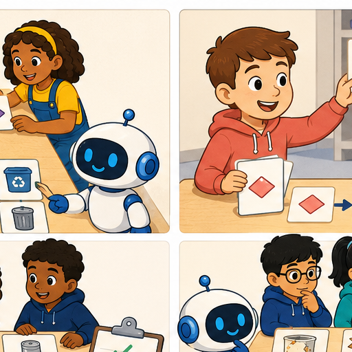
Learner name:
Readiness for the connected explanation
When one candidate fails, what must happen next, and when is no match justified?
This week’s end goal
By the end, I can build and operate a paper prototype while recording actual traces.
Student lesson · 2 of 14
Notice the evidence
PICTURE STORY
Look Closely Before You Explain
Pictures give clues; evidence tells us what the clues mean.

What do you notice?
Name three visible details without explaining them yet.
Circle the detail most connected to the system's decision.
Name one detail that may be decoration or distraction.
Make a first prediction and state the clue that supports it.
My observations, prediction, and evidence:
A closer explanation
This week you will turn the decision process into a paper prototype. One partner operates the instructions and another records the steps. A working prototype needs more than a polished drawing: someone else must be able to follow it without asking its author to supply missing rules. Keep the version you ran so the trace can be checked against it.
Copy this catalogue in order onto four cards: B1 Bookmark drawing, 10 minutes, quiet Yes; B2 Story circle, 8 minutes, quiet No; B3 Pattern puzzle, 12 minutes, quiet Yes; B4 Tower challenge, 15 minutes, quiet No. These are fictional paper-model values with materials assumed available. Label the catalogue B version 1.
Keep the Week 30 contract: input is a whole number of available minutes from 0 to 30, and Quiet required Yes or No. An activity fits when its time is no more than the available minutes AND either quiet is not required or the activity is quiet. No means either kind is allowed. Suggest the first fit with a reason; otherwise report no match. Missing or invalid input needs clarification. Suggestions do not book materials or publish anything.
Student lesson · 3 of 14
See how it works
VISUAL MECHANISM
Input → Process → Output
Follow the information instead of imagining magic inside the machine.
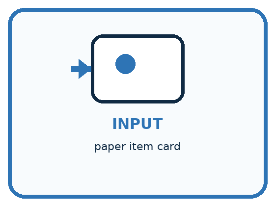
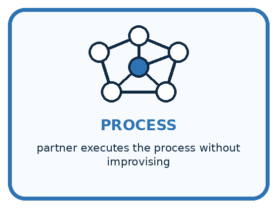
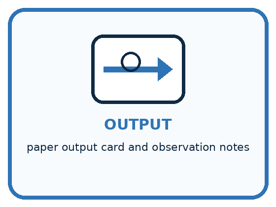
INPUT paper item card
PROCESS partner executes the process without improvising
OUTPUT paper output card and observation notes
Draw a fresh example with all three stages:
A closer explanation
A paper run that can be checked
Make a request card with Available minutes and Quiet required fields, a marker for the current catalogue row, and a trace sheet. Head the sheet Run ID, prototype version, catalogue version and request. Below it use columns Step, current row, time check, quiet check and next action or output. Use not checked when validation stops the search.
Write instruction cards P1 version 1. Card 1: validate both fields; if invalid, name the field needing correction and stop; otherwise put the marker at B1. Card 2: check the marked row against both compatibility conditions; record both checks. If both pass, suggest that row with the reason and stop. Card 3: if either fails and another row remains, advance exactly one row and return to Card 2; if no row remains, report no match and stop. Begin each new request at Card 1 with a cleared output.
Connect the picture and the explanation
Point to the input, the deciding step and the result in this week’s visual. Explain the same step in ordinary words. A picture helps when you can say what each part represents.
Student lesson · 4 of 14
Compare the cases
PICTURE GALLERY
Four Cases, Four Clues
Use the visual cue, then read the evidence carefully.
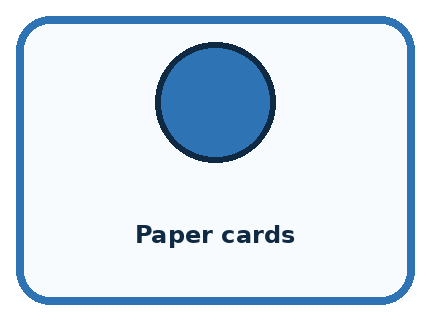
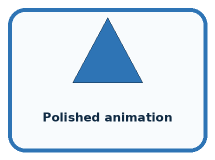
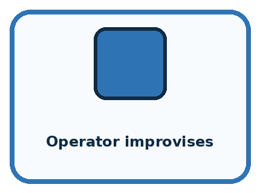
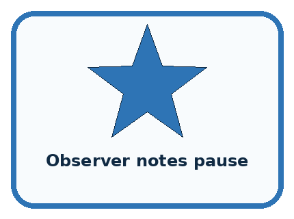
CASE 1 — Paper cards Clue: fast to revise. Meaning: good for logic test.
CASE 2 — Polished animation Clue: looks complete. Meaning: may hide weak process.
CASE 3 — Operator improvises Clue: adds secret knowledge. Meaning: invalid simulation.
CASE 4 — Observer notes pause Clue: reveals confusion. Meaning: useful evidence.
Which two pictures are easiest to confuse? What evidence separates them?
Change one thing in the pictured case
Change: Insert “if capacity is below count, continue” before accepting a bin.
Prediction: The revised trace rejects X and accepts Y for 4.
Reason: 3<4 is true; 7<4 is false, so Y fits.
Student lesson · 5 of 14
Words that unlock the idea
VOCABULARY
Words You Can See and Use
The badge is a memory cue; the definition does the real thinking work.
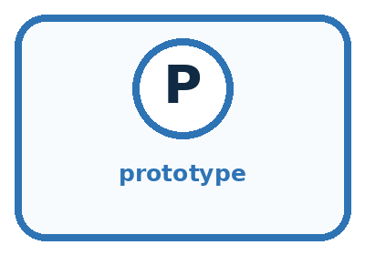
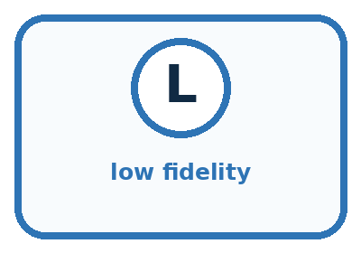
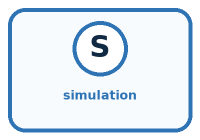
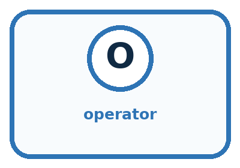
| Word | Meaning | My example |
|---|---|---|
| prototype | early representation used to test an idea | |
| low fidelity | simple version focused on function | |
| simulation | acting out system behavior | |
| operator | person executing the prototype process |
Misconception detective
CLAIM TO REPAIR A prototype must look like the final product.
Use one vocabulary word and one piece of evidence to repair it:
Words used in the closer explanation
| Word | Meaning |
|---|---|
| Instruction | A precise action or decision for the operator to follow |
| Trace | A record of the steps and state during one run |
| Expected result | The result required by the agreed specification |
| Observed result | What actually happened when this version was run |
Student lesson · 6 of 14
Follow a worked example
WORKED EXAMPLE
Watch the Reasoning, Not Just the Answer
Every step connects a claim to observable evidence.

STEP 1 — OBSERVE paper item card
STEP 2 — TRACE partner executes the process without improvising
STEP 3 — CONCLUDE paper output card and observation notes
What new evidence could change this answer?
A closer explanation
Before operating P1, use the full manual checklist to write the expected result for 9 minutes, Quiet required No. Then run the cards literally. Do not replace a surprising result with the expected one. Recording disagreement gives you something to investigate; hiding it removes useful evidence.
| Trace step for 9 minutes No | Checks recorded | Next action or output |
|---|---|---|
| 1 Validate | Whole minutes in range; No accepted | Place marker at B1 |
| 2 Check B1 | 10 is greater than 9; quiet unrestricted | Move to B2 |
| 3 Check B2 | 8 is no more than 9; quiet unrestricted | Suggest B2 with reason; stop |
This trace agrees with the expected B2 result. It shows that this run followed the instructions. One matching result does not prove that every request will work or that the prototype is faster than the manual checklist. This is a system of written rules, not a model trained on examples.
Learn from the worked case
Cover the result before checking it. Say what is given, choose the procedure, and follow one step at a time. Then uncover the result and explain your first mismatch. Ask why a step is allowed, not only what number it produces.
A pictorial worked case: Build a Paper Prototype
A fictional team turns a storage-bin specification into movable instruction cards.
The facts we will use
Bins X capacity 3 then Y capacity 7; valid count 1–9. Select first capacity at least count.
For request 4, write baseline Y before operating cards. Prototype cards mistakenly stop with X immediately.

Read the picture one step at a time
Why this result follows
A paper prototype is executable when another person can follow its instructions without guessing your intention. Record the actual wrong result separately from the expected one. Discovering a missing comparison is useful evidence for repair; pretending the operator followed the intended rule would hide the defect.
What this example does not establish
One repaired paper case does not establish usability, correctness on every input or performance of a later software implementation.
Student lesson · 7 of 14
Find and repair a mistake
COMPARE
Same Result, Different Reason
A comparison helps reveal the true concept boundary.
| Case | Evidence | What it shows |
|---|---|---|
| Paper cards | fast to revise | good for logic test |
| Polished animation | looks complete | may hide weak process |
| Operator improvises | adds secret knowledge | invalid simulation |
| Observer notes pause | reveals confusion | useful evidence |
Repair two tempting claims
CLAIM A A prototype must look like the final product.
Repair:
CLAIM B If a person can perform the task, the written process is complete.
Repair:
A closer explanation
Swap roles and give your partner the request card, catalogue, instruction cards and blank trace sheet. Let them operate without extra hints from the author. Record any point where they cannot decide what to do from the written instructions. Label and save changes, then repeat the affected run. Keep development cases separate from any cases your teacher has reserved for a later evaluation.
Your handover should let someone repeat a run using the same inputs and versions and check why it stopped. Keep all results, including disagreements. Next week you will organise several routine cases into a test record. A neat interface is useful, but correctness depends on validation, both conditions, the first-match rule and a clear ending.
Student lesson · 8 of 14
Practise together
GUIDED PRACTICE
Try It, Check It, Explain It
Use support now so you can succeed independently later.

Explain how the picture story demonstrates this idea: A prototype tests the idea before polish or technology.
Use a fresh example to explain prototype.
Trace a new input → process → output example.
Find and repair the error in: If a person can perform the task, the written process is complete.
Invent one edge case and name the safe response.
A closer explanation
Suppose the operator starts a fresh 11-minute No request at B2 because the marker was left there. They return B2. The required first fit is B1, and Card 1 explicitly says to restart at B1. The trace therefore reveals an execution mistake. If the written instructions had omitted the reset, that would instead be an instruction defect. Inspect the saved version before deciding.
Preserve the first trace. For an execution mistake, rerun the same written version correctly and label the new run. For an instruction defect, save a corrected version with a new label, state what changed, and rerun. Never rewrite an old observed result to make a version appear successful.
Practise with less help: Run and record the first match
Use workbook W2 for the connected example “Building and tracing a paper prototype”. First fill the input and rule boxes. Try the middle steps before asking for a hint. After a hint, try the next step yourself.
| Plan | Do | Check |
|---|---|---|
| What is given? Which rule or procedure applies? | Record each intermediate step. | Does the result follow? What remains unknown? |
Explain your trace to a partner. Your partner points to one step to check. Swap roles on the next case. Each person writes their own explanation.
Check your reasoning
Use the worked case for Building and tracing a paper prototype. Proposed explanation: “A correct-looking answer is enough”. Decide whether this explanation is supported. Point to the step or supplied fact that decides; explain your repair if needed.
Answer on your own before discussion. If you are unsure, say which step you need help with.
Explain the picture
What should appear in the test log before and after the repair?
This is supported practice. Keep the separately named independent case for an attempt before feedback.
Student lesson · 9 of 14
Run the investigation
EXPLORER LAB
Partner-as-Computer Prototype
Predict first, test honestly, and explain what the evidence means.

State your prediction before the result is known.
Complete the task: Run the sorter with a partner acting as the computer.
Keep a normal case and an edge case clearly separated.
Record what happened—even when it does not match your prediction.
Explain the result, one limitation, and the next useful test.
| Case | Prediction | Observed result | What it means |
|---|---|---|---|
| Normal | |||
| Edge |
Plan → try → check
Before trying: what do I expect, and why? While trying: which step could first go wrong? Afterwards: what did I actually observe, and what should change? Keep “not run” if you only traced the procedure.
Student lesson · 10 of 14
Build your understanding
PRACTICE LADDER
Climb from Recall to Defense
Each step asks for a stronger kind of understanding.

RECALL Define prototype.
EXPLAIN A prototype tests the idea before polish or technology.
TRACE Show the input, process, and output.
DIAGNOSE Repair: A prototype must look like the final product.
TRANSFER Apply the idea to a new home or classroom case.
CREATE Design one revealing test.
DEFEND Give a claim, evidence, mechanism, limit, and safe action.
Student lesson · 11 of 14
Connect your project
PROJECT
Helpful Classroom Sorter
Build one coherent system across the year, one evidence-based decision at a time.

What real classroom need does this serve?
What information is necessary—and what should stay private?
What happens inside the process?
What normal and edge cases will you test?
When should it say not sure or ask a person?

My project decision:
Evidence for your project
Save sorter instruction cards, dated versions and operator traces alongside the manual expected outputs.
Student lesson · 12 of 14
Show what you know
MASTERY
Fresh-Case Independent Proof
Complete this after teaching and guided practice have ended.

□ Name or draw the fresh case.
□ Trace input, process, and output.
□ State the conclusion and strongest evidence.
□ Name one limit, failure, missing clue, or fairness/privacy concern.
□ Explain one safe next action or improvement.
Independent evidence:
My level: □ Not yet □ With one hint □ Independently □ I can teach it
Student lesson · 13 of 14
Study a complete case
Week 32 Worked case
Use the supplied details to practise the weekly concept before attempting the independent question. This case extends the illustrated lesson.
The situation
A paper prototype has input cards, decision cards and paper, plastic and review trays.
The question
How can a learner simulate it?
Worked explanation
Read input, follow written decisions and place a token in a tray. Record the trace. Human simulation does not establish model training.
Explain it in your own words
Which detail supports the answer, and why does it matter?
Trace the supplied case visually
Act out a paper prototype
| Evidence or stage | Value or result |
|---|---|
| Input card | Observe material |
| Decision cards | Follow written checks |
| Token | Place in paper, plastic or review tray |
| Trace | Record each decision |
A paper prototype has input cards, decision cards and paper, plastic and review trays.
How can a learner simulate it?
Read input, follow written decisions and place a token in a tray. Record the trace. Human simulation does not establish model training.
Student lesson · 14 of 14
Try a new case independently
Independent case: Build a new route through a small catalogue
Independently make and trace instruction cards for this paper equipment catalogue: E1 first, capacity 3 people; E2 second, capacity 6. Valid input is a whole group size from 1 to 8. Suggest the first item whose capacity is at least the group size; no booking occurs. Include invalid input and no match. Write expected results, then operate your cards for groups of 5 and 7. Record both runs and explain every stopping point.
Attempt this case before feedback. Record any help. Earlier examples below are further practice; a case already practised with feedback cannot establish fresh transfer.
Week 32 Independent application
Close the worked explanation. Apply the idea to this different question without copying.
Your paper prototype shows an input card, a decision card and an output card. Explain what a person must simulate and what the prototype cannot prove.
My answer, with a trace, calculation or supporting evidence
Create and test
Change one relevant detail. Predict the result before testing. Include a boundary or missing-information case when it helps reveal a limit.
My changed input and expected result
Connect to your project
Build the complete paper sorter: input cards, process guide, output cards, not-sure card, and test log.
The evidence I will keep
Your teacher has the independent answer and scoring criteria. Complete the matching workbook week to keep your practice evidence together.
Transfer practice from the original programme
Assign three people as input reader, rule follower and output recorder. Run the repaired sorter on paper, metal and an unreadable description. Record expected and observed outcomes. What does this prototype demonstrate?
Use feedback to improve
Attempt the independent case before hints. Record whether you worked alone, used a hint or followed a model. After feedback, fix the first unsupported step and explain why it changed. A later check uses a changed case, not a copied answer.